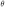
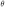
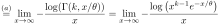
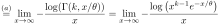
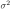
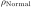
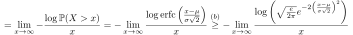

Next: August – dB logplot Up: Blog posts 2022 Previous: June – Gaussian vs. Contents
A simple but important observation for the July.
Let us consider two sinusoidal signals of opposite phases during the time
![$t \in [0,1]$](img76.svg) :
:
 and
and
 Obviously, the signals cancel each other completely and the mean power of the additive signal  is just 0:
Obviously, the signals cancel each other completely and the mean power of the additive signal  is just 0:
![$\displaystyle \mathbb{E}[(S_1 + S_2)^2] = \int_0^1 (\cos(2 \pi t) + \cos(2 \pi t + \pi))^2dt = \int_0^10 dt = 0,$](img80.svg) |
(1) |
![$\mathbb{E}[\cdot]$](img81.svg) is the mean (slightly abusing the notation of the probabilistic expected value).
is the mean (slightly abusing the notation of the probabilistic expected value).
We could try to add the powers of the signals separately together:
![$\displaystyle \mathbb{E}[S_1^2] + \mathbb{E}[S_2^2]$](img82.svg) |
 |
(2) |
 |
Let us assume that  and  are two signals. We have that
and  are two signals. We have that
![$\displaystyle \mathbb{E}[(S_1 + S_2)^2] = \mathbb{E}[S_1^2 + S_2^2 + 2 S_1 S_2]= \mathbb{E}[S_1^2] + \mathbb{E}[S_2^2] + 2 \mathbb{E}[S_1 S_2],$](img88.svg) |
(3) |
![$\mathbb{E}[(S_1 + S_2)^2] = \mathbb{E}[S_1^2] + \mathbb{E}[S_2^2] $](img89.svg) holds if and only if the cross-correlation
holds if and only if the cross-correlation
![$\mathbb{E}[S_1 S_2] = 0,$](img90.svg) i.e. if the signals and are not correlated. Clearly, this is not the case with our initial signals, as then the cross-correlation is given by
i.e. if the signals and are not correlated. Clearly, this is not the case with our initial signals, as then the cross-correlation is given by
![$\displaystyle \mathbb{E}[S_1S_2] = \int_0^1 \cos(2 \pi t) \cos(2 \pi t + \pi) d...
...i t )dt = - \frac{1}{2}\int_0^1 \cos(4 \pi t)dt - \frac{1}{2} = - \frac{1}{2},
$](img91.svg)
In above, we used deterministic signals, but the same remarks apply to random signals. For example, for uniformly random phases , let  and ;
![$\displaystyle \mathbb{E}_{\phi_1,\phi_2} \left[\mathbb{E}[(S_1 + S_2)^2]\right]...
...\right] +\mathbb{E}_{\phi_1,\phi_2} \left[\mathbb{E}\left[ S_1S_2\right]\right]$](img95.svg) |
||
 |
||
 |
||
 |
and , i.e.,
![$\mathbb{E}_{\phi_1,\phi_2} \left[\mathbb{E}\left[ S_1S_2\right]\right] =0$](img100.svg) .
.
References: